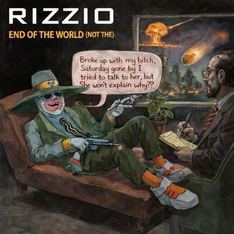

Listen to the radio, I'ma listen to the, listen to the radio
Gonna listen, I'ma listen, gonna listen, I'ma listen
Gonna listen, gonna listen to the radio
I'ma listen to the radio
Gonna listen, I'ma listen, gonna listen to the
Gonna listen, I'ma listen, gonna listen, gonna listen
I'ma listen, gonna listen to the radio
Broke up with my bitch, Saturday gone by
I tried to talk to her, but she won't explain why
I was calm, I was patient, I listened to her every word
Time for me to say my line, she never bloody heard
She never bloody heard
Not even one word
She never bloody heard
So I sat down and analyzed and it occurred to me
The answers were in my face for everyone to see
I saw my psychoanalysizer to see what he would say
Explained my story he said, "Steve, hear me out today
Don't waste your time on wotlesss woman who don't treat you fair
'Cause all the time you're trying hard they don't even care
Best for you to be heading south or call upon an ex
Or sit at home, cry at night and get really vexed"
"It's alright for you to say that man
But how do I make that work?
My life is being torn apart, I'm left in the lurch"
"Yo, pardy, pull yourself together
You're man of the world
Consult your phone book, take a look,
You have plenty of girls
Forget about being nice
This is the 90s man!
Get your ski mask and gat and take a firmer stand
Yo, listen, you're acting like your whole life is in a blur
But bet your life
This is the end of the world... not the..."
It's not the end of the world
Why? You have plenty of girls
It's not the end of the world
Man, you got plenty of girls
Listen to the radio, I'ma listen to the
Gonna listen, I'ma listen, gonna listen, I'ma listen
Gonna listen, gonna listen to the radio
I'ma listen, gonna listen to the radio
I'ma listen to the, gonna listen, I'ma listen
Gonna listen, I'ma listen to the radio
Gonna listen, I'ma listen, gonna listen, I'ma listen
Gonna listen, gonna listen, I'ma listen
Gonna listen, I'ma listen, gonna listen to the radio
So after those words of wisdom I confronted head-to-head
Jumped in my wheels, sped round
And this is what I said
"Yo, Biatch you tried to make it look like it's all down to me
But now I'ma tell ya how it's gonna be"
Don't try your guilty shit because I don't play that!...
Don't try your guilty shit because I don't play that
Or you'll be heading for a collision course of my foot, Jack
I'll be caring, willing, always chilling, give you nuff space
Oh, but like a ho you have to go and fuck in my face
Time to get up off of that, relax, relate be cool
If you remember in September you applied for school
So act like you know be clever, and we'll be good together
Come rain, come shine, come sleet, come snow
Whatever the weather
We can be friends if you are sincere
But I ain't investing nothing if you're not there
Someday, somehow, we can work it out
But don't come round my yard with a closed mouth
So don't come round my gates and disrespect me homie
'Cause I will box your face in
Bitch, you don't even know me
With this in mind, I'm sure your you'll find
We'll be contented
But meanwhile behind my smile
I'll be boning my intended
Boning my intended
Will be contented
But I'll be boning my intended
Listen to the radio, I'ma listen
Gonna listen, I'ma
I'm gonna listen to the radio